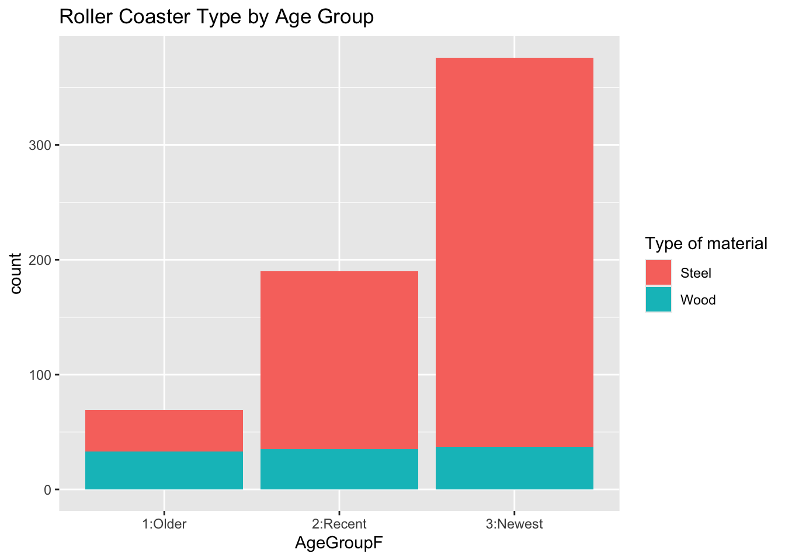
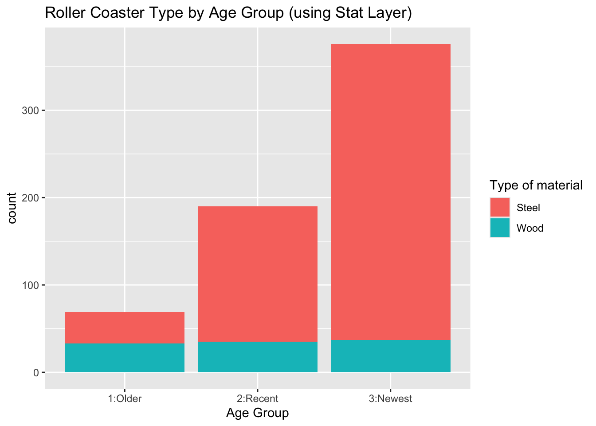

#1
library(httr)
resp <- GET("https://newsapi.org/v2/everything?q=ai&from=2026-09-01&language=en&pageSize=50&apiKey=43416691f7e147da9122be62d78cff7c")hw5_bdevapa
Task 1 - Querying an API and a Tidy-Style Function
Question 1
Use GET() from the httr package to return information about a topic that you are interested in that has been in the news lately (store the result as an R object). Note: We can only look 30 days into the past with a free account
Question 2
Parse what is returned and find your way to the data frame that has the actual article information in it (check content). Note the first column should be a list column!
#2
library(jsonlite)
library(tidyverse)── Attaching core tidyverse packages ──────────────────────── tidyverse 2.0.0 ──
✔ dplyr 1.2.1 ✔ readr 2.2.0
✔ forcats 1.0.1 ✔ stringr 1.6.0
✔ ggplot2 4.0.3 ✔ tibble 3.3.1
✔ lubridate 1.9.5 ✔ tidyr 1.3.2
✔ purrr 1.2.2
── Conflicts ────────────────────────────────────────── tidyverse_conflicts() ──
✖ dplyr::filter() masks stats::filter()
✖ purrr::flatten() masks jsonlite::flatten()
✖ dplyr::lag() masks stats::lag()
ℹ Use the conflicted package (<http://conflicted.r-lib.org/>) to force all conflicts to become errorsresp_json <- fromJSON(rawToChar(resp$content))
news_articles <- as_tibble(resp_json$articles)
news_articles# A tibble: 30 × 8
source$id $name author title description url urlToImage publishedAt content
<chr> <chr> <chr> <chr> <chr> <chr> <chr> <chr> <chr>
1 the-verge The … Sean … The … "Remember … http… https://p… 2026-09-17… "Remem…
2 wired Wired Brian… Here… "This week… http… https://m… 2026-09-17… "Leah …
3 wired Wired Molly… AI A… "Silicon V… http… https://m… 2026-09-13… "Welco…
4 wired Wired Isabe… Math… "Powerful … http… https://m… 2026-09-19… "Mathe…
5 wired Wired Matt … Forg… "AI labs a… http… https://m… 2026-09-19… "Welco…
6 the-verge The … Charl… What… "As the te… http… https://p… 2026-09-18… "<ul><…
7 the-verge The … Rober… Why … "There is … http… https://p… 2026-09-03… "<ul><…
8 the-verge The … Jess … Inst… "Instagram… http… https://p… 2026-09-03… "<ul><…
9 the-verge The … Rober… The … "Depending… http… https://p… 2026-09-01… "<ul><…
10 the-verge The … Tom W… Appl… "Apple is … http… https://p… 2026-09-14… "<ul><…
# ℹ 20 more rowsQuestion 3
Now write a quick function that allows the user to easily query this API. The inputs to the function should be the title/subject to search for (string), a time period to search from (string - you’ll search from that time until the present), and an API key.
#3
find_news_articles <- function(topicStr, fromDateStr, apiKey) {
#check for missing inputs
if (missing(topicStr) || missing(fromDateStr) || missing(apiKey)) {
stop("topicStr, fromDateStr, and apiKey are required")
}
# Convert the supplied date to a Date -- without supplying format the default format is not what not acceptable by the api
fromDate <- as.Date(fromDateStr, format = "%m-%d-%Y")
# Check that date is not more than 30 days old
#wihtout the error it simply gives 0 results -- the api doesnbt provide results for last 30 days
if (fromDate < Sys.Date() - 30) {
stop("fromDateStr cannot be more than 30 days old")
}
library(httr)
library(jsonlite)
url <- paste0(
"https://newsapi.org/v2/everything?q=", topicStr,
"&from=", fromDateStr,
"&language=en&pageSize=50&apiKey=", apiKey
)
resp <- GET(url)
resp_json <- fromJSON(rawToChar(resp$content))
news_articles <- as_tibble(resp_json$articles)
}
news <- find_news_articles("tesla","09-01-2026","43416691f7e147da9122be62d78cff7c")
news# A tibble: 46 × 8
source$id $name author title description url urlToImage publishedAt content
<chr> <chr> <chr> <chr> <chr> <chr> <chr> <chr> <chr>
1 the-verge The … Andre… The … "At a priv… http… https://p… 2026-09-04… "<ul><…
2 the-verge The … Andre… Tesl… "Elon Musk… http… https://p… 2026-09-04… "<ul><…
3 wired Wired Aaria… Tesl… "An invite… http… https://m… 2026-09-04… "A Tes…
4 wired Wired Aaria… Tesl… "The US go… http… https://m… 2026-09-04… "Tesla…
5 <NA> Gizm… AJ De… Anot… "The vehic… http… https://g… 2026-09-01… "For t…
6 the-verge The … Andre… The … "It makes … http… https://p… 2026-09-14… "<ul><…
7 <NA> Gizm… Mike … Firs… "\"Pushing… http… https://g… 2026-09-06… "Certa…
8 <NA> Slas… BeauHD Tesl… "Tesla has… http… https://a… 2026-09-04… "Tesla…
9 business… Busi… Lloyd… I le… "Brett Sch… http… https://i… 2026-09-01… "Brett…
10 business… Busi… Jason… Alex… "Alex Gibn… http… https://i… 2026-09-09… "Elon …
# ℹ 36 more rowsTask 2 - Summarizing Roller Coaster Data
- Basic EDA
Question 4 & 5
- Look at how the data is stored and see if everything makes sense.
- Document any missing values in the data.
#4
library(readr)
roller_coaster_data <- read_csv("https://www4.stat.ncsu.edu/online/datasets/635USrollercoasters.csv")Rows: 635 Columns: 21
── Column specification ────────────────────────────────────────────────────────
Delimiter: ","
chr (12): Coaster, Park, City, State, Census Region, AgeGroup, Scale, Type, ...
dbl (9): Year Opened, TopSpeed, MaxHeight, Drop, Length, Duration, # of Inv...
ℹ Use `spec()` to retrieve the full column specification for this data.
ℹ Specify the column types or set `show_col_types = FALSE` to quiet this message.str(roller_coaster_data)spc_tbl_ [635 × 21] (S3: spec_tbl_df/tbl_df/tbl/data.frame)
$ Coaster : chr [1:635] "Adrenaline Peak" "Adventure Express" "Afterburn" "Aftershock" ...
$ Park : chr [1:635] "Oaks Amusement Park" "Kings Island" "Carowinds" "Silverwood Theme Park" ...
$ City : chr [1:635] "Portland" "Mason" "Charlotte" "Athol" ...
$ State : chr [1:635] "Oregon" "Ohio" "North Carolina" "Idaho" ...
$ Census Region : chr [1:635] "West" "Midwest" "South" "West" ...
$ Year Opened : num [1:635] 2018 1991 1999 2008 2010 ...
$ AgeGroup : chr [1:635] "3:Newest" "2:Recent" "2:Recent" "3:Newest" ...
$ TopSpeed : num [1:635] 45 35 62 65.6 22 67 35 66 48 50 ...
$ MaxHeight : num [1:635] 72 63 113 192 25 ...
$ Scale : chr [1:635] "Extreme" "Thrill" "Extreme" "Extreme" ...
$ Type : chr [1:635] "Steel" "Steel" "Steel" "Steel" ...
$ Design : chr [1:635] "Sit Down" "Sit Down" "Inverted" "Inverted" ...
$ Drop : num [1:635] 70 47 110 177 22.5 170 20 147 80 144 ...
$ Length : num [1:635] 1050 2963 2956 1204 628 ...
$ Duration : num [1:635] 66 140 167 92 47 190 100 143 110 110 ...
$ Inversions? : chr [1:635] "Yes" "No" "Yes" "Yes" ...
$ # of Inversions: num [1:635] 3 0 6 3 0 6 0 0 0 4 ...
$ Make : chr [1:635] "Gerstlauer Amusement Rides GmbH" "Arrow Dynamics" "Bolliger & Mabillard" "Vekoma" ...
$ Latitude : num [1:635] 45.5 39.4 35.3 47.9 28 ...
$ Longitude : num [1:635] -122.7 -84.3 -80.8 -116.7 -82.6 ...
$ Boundary : chr [1:635] "{\"type\":\"Feature\",\"properties\":{\"CENSUSAREA\":95988.013,\"NAME\":\"Oregon\",\"GEO_ID\":\"0400000US41\",\"| __truncated__ "{\"type\":\"Feature\",\"properties\":{\"CENSUSAREA\":40860.694,\"NAME\":\"Ohio\",\"GEO_ID\":\"0400000US39\",\"L"| __truncated__ "{\"type\":\"Feature\",\"properties\":{\"CENSUSAREA\":48617.905,\"NAME\":\"North Carolina\",\"GEO_ID\":\"0400000"| __truncated__ "{\"type\":\"Feature\",\"properties\":{\"CENSUSAREA\":82643.117,\"NAME\":\"Idaho\",\"GEO_ID\":\"0400000US16\",\""| __truncated__ ...
- attr(*, "spec")=
.. cols(
.. Coaster = col_character(),
.. Park = col_character(),
.. City = col_character(),
.. State = col_character(),
.. `Census Region` = col_character(),
.. `Year Opened` = col_double(),
.. AgeGroup = col_character(),
.. TopSpeed = col_double(),
.. MaxHeight = col_double(),
.. Scale = col_character(),
.. Type = col_character(),
.. Design = col_character(),
.. Drop = col_double(),
.. Length = col_double(),
.. Duration = col_double(),
.. `Inversions?` = col_character(),
.. `# of Inversions` = col_double(),
.. Make = col_character(),
.. Latitude = col_double(),
.. Longitude = col_double(),
.. Boundary = col_character()
.. )
- attr(*, "problems")=<pointer: 0x7fe8f717bb20> # the data generally makes sense, some columns such as yearOpened can be character
roller_coaster_data <- roller_coaster_data |>
mutate(YearOpened = as.character(`Year Opened`),
StateF = factor(State),
AgeGroupF = factor(AgeGroup),
ScaleF = factor(Scale),
TypeF = factor(Type),
DesignF = factor(Design)
)
roller_coaster_data# A tibble: 635 × 27
Coaster Park City State `Census Region` `Year Opened` AgeGroup TopSpeed
<chr> <chr> <chr> <chr> <chr> <dbl> <chr> <dbl>
1 Adrenaline… Oaks… Port… Oreg… West 2018 3:Newest 45
2 Adventure … King… Mason Ohio Midwest 1991 2:Recent 35
3 Afterburn Caro… Char… Nort… South 1999 2:Recent 62
4 Aftershock Silv… Athol Idaho West 2008 3:Newest 65.6
5 Air Grover Busc… Tampa Flor… South 2010 3:Newest 22
6 Alpengeist Busc… Will… Virg… South 1997 2:Recent 67
7 Alpine Bob… Grea… Quee… New … Northeast 1998 2:Recent 35
8 American E… Six … Gurn… Illi… Midwest 1981 2:Recent 66
9 American T… Six … Eure… Miss… Midwest 2008 3:Newest 48
10 Anaconda King… Dosw… Virg… South 1991 2:Recent 50
# ℹ 625 more rows
# ℹ 19 more variables: MaxHeight <dbl>, Scale <chr>, Type <chr>, Design <chr>,
# Drop <dbl>, Length <dbl>, Duration <dbl>, `Inversions?` <chr>,
# `# of Inversions` <dbl>, Make <chr>, Latitude <dbl>, Longitude <dbl>,
# Boundary <chr>, YearOpened <chr>, StateF <fct>, AgeGroupF <fct>,
# ScaleF <fct>, TypeF <fct>, DesignF <fct># 5 - document missing values
sum_na <- function(column){
sum(is.na(column))
}
na_counts <- roller_coaster_data |>
summarize(across(everything(), sum_na))
na_counts# A tibble: 1 × 27
Coaster Park City State `Census Region` `Year Opened` AgeGroup TopSpeed
<int> <int> <int> <int> <int> <int> <int> <int>
1 0 0 0 0 0 0 0 74
# ℹ 19 more variables: MaxHeight <int>, Scale <int>, Type <int>, Design <int>,
# Drop <int>, Length <int>, Duration <int>, `Inversions?` <int>,
# `# of Inversions` <int>, Make <int>, Latitude <int>, Longitude <int>,
# Boundary <int>, YearOpened <int>, StateF <int>, AgeGroupF <int>,
# ScaleF <int>, TypeF <int>, DesignF <int>- Categorical variables
Question - 6
Create a one-way contingency table, a two-way contingency table, and a three-way contingency table for some of the factor variables you created previously. Use table() to accomplish this
#6
# group by type factor variable and counting for each group
one_way <- table(roller_coaster_data$TypeF)
one_way
Steel Wood
530 105 # two way table -- group by roller coaster and by age group factor variables
two_way <- table(roller_coaster_data$AgeGroupF, roller_coaster_data$TypeF)
two_way
Steel Wood
1:Older 36 33
2:Recent 155 35
3:Newest 339 37# three way table -- group by roller caoster and by agen group factor variables -- but then also group by the design
three_way <- table(roller_coaster_data$AgeGroupF, roller_coaster_data$TypeF, roller_coaster_data$DesignF)
three_way, , = Bobsled
Steel Wood
1:Older 0 0
2:Recent 3 0
3:Newest 0 1
, , = Flying
Steel Wood
1:Older 0 0
2:Recent 0 0
3:Newest 9 0
, , = Inverted
Steel Wood
1:Older 0 0
2:Recent 22 0
3:Newest 20 0
, , = Sit Down
Steel Wood
1:Older 36 33
2:Recent 123 35
3:Newest 297 36
, , = Stand Up
Steel Wood
1:Older 0 0
2:Recent 3 0
3:Newest 1 0
, , = Suspended
Steel Wood
1:Older 0 0
2:Recent 4 0
3:Newest 3 0
, , = Wing
Steel Wood
1:Older 0 0
2:Recent 0 0
3:Newest 9 0Question - 7
- Create a conditional two-way table using table(). That is, condition on one variable’s setting and create a two-way table. Do this using two different methods: • Once, by subsetting the data (say with filter()) and then creating the two-way table • Once, by creating a three-way table and subsetting it
#7
# by subsetting the data (say with filter()) and then creating the two-way table
bobsled_data <- roller_coaster_data |>
filter(DesignF == "Bobsled")
conditional_two_way_7_1 <- table(bobsled_data$AgeGroupF, bobsled_data$TypeF)
conditional_two_way_7_1
Steel Wood
1:Older 0 0
2:Recent 3 0
3:Newest 0 1# by creating a three-way table and subsetting it
three_way <- table(roller_coaster_data$AgeGroupF, roller_coaster_data$TypeF, roller_coaster_data$DesignF)
conditional_two_way_7_2 <- three_way[, , "Bobsled"]
conditional_two_way_7_2
Steel Wood
1:Older 0 0
2:Recent 3 0
3:Newest 0 1Question - 8
Create a two-way contingency table using group_by() and summarize() from dplyr. Then use pivot_wider() to make the result look more like the output from table().
#8
two_way <- table(roller_coaster_data$AgeGroupF, roller_coaster_data$TypeF)
two_way
Steel Wood
1:Older 36 33
2:Recent 155 35
3:Newest 339 37two_way_tidy <- roller_coaster_data |>
group_by(AgeGroupF, TypeF) |>
summarize(count = n()) |>
pivot_wider(names_from = TypeF, values_from = count)`summarise()` has regrouped the output.
ℹ Summaries were computed grouped by AgeGroupF and TypeF.
ℹ Output is grouped by AgeGroupF.
ℹ Use `summarise(.groups = "drop_last")` to silence this message.
ℹ Use `summarise(.by = c(AgeGroupF, TypeF))` for per-operation grouping
(`?dplyr::dplyr_by`) instead.two_way_tidy# A tibble: 3 × 3
# Groups: AgeGroupF [3]
AgeGroupF Steel Wood
<fct> <int> <int>
1 1:Older 36 33
2 2:Recent 155 35
3 3:Newest 339 37Question - 9
Create a stacked bar graph and a side-by-side bar graph. Give relevant x and y labels, and a title for the plots.
#9
g <- ggplot(roller_coaster_data, aes(x = AgeGroupF, fill = TypeF))
g + geom_bar() +
labs(title = "Roller Coaster Type by Age Group") +
scale_fill_discrete("Type of material")
#Below is antoer way to do it
g1 <- ggplot(data = roller_coaster_data |>
group_by(AgeGroupF, TypeF) |>
summarize(count = n()), aes(x = AgeGroupF, y = count, fill = TypeF)) `summarise()` has regrouped the output.
ℹ Summaries were computed grouped by AgeGroupF and TypeF.
ℹ Output is grouped by AgeGroupF.
ℹ Use `summarise(.groups = "drop_last")` to silence this message.
ℹ Use `summarise(.by = c(AgeGroupF, TypeF))` for per-operation grouping
(`?dplyr::dplyr_by`) instead.g1 + geom_bar(stat = "identity") +
labs( title = "Roller Coaster Type by Age Group (using Stat Layer)",
x = "Age Group") +
scale_fill_discrete("Type of material")